CloudCast Mixer User Manual
CloudCast Mixer is an AES67 8-bus broadcast mixer: a realtime audio engine and its browser control surface, run as one service on Linux — on hardware, in EC2, or in a container. The desk has 16 faders, four programme buses (PGM 1–4), four auxiliary buses (AUX 1–4), a per-fader mix-minus for every channel, and cue/PFL with monitoring in the operator's own browser.
This manual is for the person installing and driving the desk. It covers installation on Docker and on bare metal, then every panel of the control surface: the channel strip, mix-minus and backfeeds, sources and discovery, outputs, console profiles, the clock, intercom, physical control surfaces and the rack panel.
Everything an operator touches on this desk is also available over REST and WebSocket, so anything this manual shows can be automated.
Contents
- Core concepts
- Installing
- Getting started
- The channel strip
- Banks
- The main meter and the monitor
- Cue and PHONES
- Processing
- Mix-minus and backfeeds
- Sources
- Outputs
- Console profiles
- Clock
- Intercom
- Control surfaces
- The rack panel
- Accounts, roles and security
- Themes
1. Core concepts
The desk at a glance
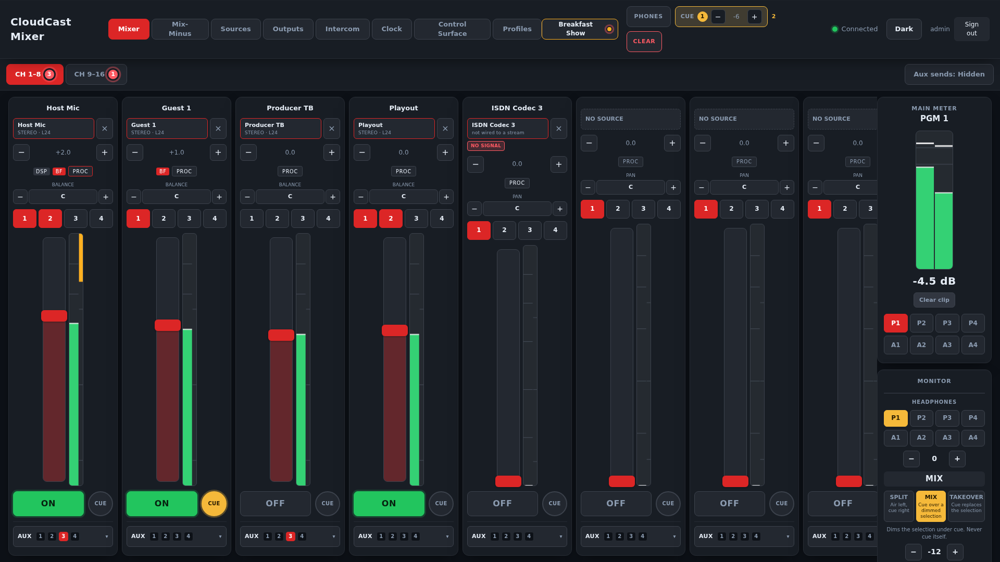
One service runs both halves of the product: the engine, a realtime audio process that mixes AES67 streams sample-exactly, and the control surface, the browser page in front of you. The surface never carries audio to air — closing the browser changes nothing on the plant. The one exception is deliberate: PHONES plays the cue bus into your browser, so you can pre-fade listen from wherever you are sitting (§7).
Sources, streams and channels
Three ideas, in one direction:
| Thing | What it is | Where it is managed |
|---|---|---|
| Stream | An AES67 endpoint — a multicast address the desk receives or transmits | Sources tab (receive), Outputs tab (transmit) |
| Source | A named thing you can put on a fader — "Host Mic", "Playout" — wired to a receive stream, carrying its own processing, backfeed and bus permissions | Sources tab |
| Channel | One of the 16 faders, with a source patched to it | Mixer tab |
A fader's label is the name of the source patched to it. Processing and backfeed belong to the source, so they follow it onto whichever fader it is patched to.
Buses
Eight mix buses, in two families:
- PGM 1–4 — programme buses. Every channel taps them post-fader: the fader and the ON switch always govern what reaches programme.
- AUX 1–4 — auxiliary buses, fed by per-channel aux sends with their own level and a selectable tap point (§4). Auxes carry mix-minus returns, IFB, FX — anything that is not programme.
Each bus has a label, a master gain, and (once bound on the Outputs tab) an AES67 transmit stream. Beside the eight buses there is one cue bus (§7) and a headphones monitor selection (§6).
2. Installing
What it runs on
Linux x86_64 with glibc 2.35 or newer — Ubuntu 22.04+, Debian 12+, RHEL 9+, or the container image on anything that runs Docker. There is no Windows target, by design. Two ways to install:
- The container image — the engine, the built control surface, and a start-up
capability check in one image. Distributed through Docker Hub as
cloudcastsystems/cloudcast-mixer(access is granted with your licence). - The release archive — one static-free binary (
ccmix-server), the surface bundle it serves, and the systemd/udev files a bare-metal install needs.
Running the container
The default transport is null: the whole desk runs with no privileges, no network
requirements and no audio hardware — the right first run on any machine, and enough for
everything in this manual except audio actually arriving.
docker login # an account with access to the image
docker run -d --name ccmix \
-p 8080:8080 \
-v ccmix-profiles:/var/lib/ccmix \
-e CCMIX_BOOTSTRAP_PASSWORD='choose-a-password' \
cloudcastsystems/cloudcast-mixer:latest
Open http://<host>:8080 and sign in as admin (§3).
The volume is not optional. Console profiles — every saved desk — live in
/var/lib/ccmix. Run without the volume and they die with the container. If
CCMIX_BOOTSTRAP_PASSWORD is not set, a password is generated and printed once in the
container log (docker logs ccmix) — it is stored hashed and cannot be recovered later.
Going on air — the realtime privileges
On a plant network the container needs the host's network namespace and two realtime ulimits:
docker run -d --name ccmix \
--network host \
--ulimit rtprio=3 --ulimit memlock=-1 \
-v ccmix-profiles:/var/lib/ccmix \
-e CCMIX_TRANSPORT=aes67 \
-e CCMIX_INTERFACE=<plant-iface> \
-e CCMIX_REQUIRE_CAPABILITIES=1 \
cloudcastsystems/cloudcast-mixer:latest
--network host— multicast RTP, SAP and PTP do not traverse Docker's bridge. A bridged container starts, serves the surface, and looks entirely healthy — and hears nothing. This was measured, not assumed. The cost: the desk's ports are now host ports; moveCCMIX_HTTP_PORTif 8080 is taken.--ulimit rtprio=3 --ulimit memlock=-1— grant the audio threadSCHED_FIFOscheduling and lock the mixer's memory against paging. Do not substitute--cap-add=SYS_NICE: a capability added to a non-root container never becomes effective, and this image runs unprivileged. The ulimits are simultaneously the working answer and the smaller privilege.CCMIX_REQUIRE_CAPABILITIES=1— in production the mixer should refuse to start rather than run degraded in a way nobody notices until it is on air.
Without a stream configured the desk transmits nothing and joins nothing; SAP discovery and announcement are separate opt-ins (environment reference).
The host firewall
A host-networked container is subject to the host's firewall, and the failure is
silent in the worst way: the multicast join succeeds, the switch forwards the traffic,
tcpdump shows it arriving — and the socket never sees it. On a ufw host, admit the
AES67 and PTP groups on the media interface:
sudo ufw allow in on <plant-iface> to 239.0.0.0/8 comment 'AES67 RTP + SAP'
sudo ufw allow in on <plant-iface> to 224.0.1.129 comment 'PTP'
The PTP hardware clock
Without a PHC the media clock falls back to the system clock, and the desk's Clock tab
(§13) says so rather than implying lock. Passing --device /dev/ptp0 alone is
not enough — the node is root:root 0600 on the host, so the unprivileged mixer gets
a device it cannot open. Install the udev rule on the host:
# /etc/udev/rules.d/70-ccmix-ptp.rules
SUBSYSTEM=="ptp", GROUP="ccmix-ptp", MODE="0660"
then add to the run command:
--device /dev/ptp0 --group-add <gid-of-ccmix-ptp>
Use the PHC of the interface AES67 actually uses — read it from
/sys/class/net/<iface>/device/ptp/. A readable PHC on a different NIC disciplines
nothing, and the start-up check says so.
Checking the launch
The image ships ccmix-preflight, which proves each privilege was granted — it runs
chrt, opens the PHC, inspects the network namespace — rather than inferring from flags.
Run it with the exact flags you deploy with:
docker run --rm --network host --ulimit rtprio=3 --ulimit memlock=-1 \
-e CCMIX_TRANSPORT=aes67 -e CCMIX_INTERFACE=<plant-iface> \
cloudcastsystems/cloudcast-mixer:latest ccmix-preflight
One line per requirement — ok, DEGRADED with the flag that fixes it, or info. It
also runs automatically at every container start. The container's health check goes
healthy once the desk actually answers through its own web port.
Docker Compose
The repository's deploy/docker/docker-compose.yml is the same deployment as above with
the reasoning inline — host networking, the two ulimits, cap_drop: ALL,
no-new-privileges, the profiles volume, and the commented-out PTP passthrough ready to
enable. docker compose -f deploy/docker/docker-compose.yml up and edit from there.
Bare metal
The release archive contains:
ccmix-server the mixer and its control plane — no runtime dependencies
web/ the control surface, built against the real backend
systemd/ unit files for a bare-metal install
udev/ the rule that makes /dev/ptp* reachable by an unprivileged mixer
Check what you have before you run it — both answers come from the binary itself, offline:
./ccmix-server --version
./ccmix-server --verify-surface ./web
The second matters: a surface bundle can be built against an in-process mock, and a mock build looks like a working desk while reaching no mixer at all. The server performs the same verification at every start and refuses to serve a mock bundle.
Install the binary and bundle, point CCMIX_WEB_ROOT at the bundle, set CCMIX_BIND,
and use the shipped systemd unit — it carries the same realtime grants
(LimitRTPRIO/LimitMEMLOCK) the container expresses as ulimits.
Master and backup
A master and its backup must never both feed the plant. Start the backup with
CCMIX_SUPPRESS_EXTERNAL_OUTPUTS=1: it runs the same desk, but announces nothing and
double-fires nothing. The setting fails towards silence — anything but an explicit
0/false/no/off suppresses.
Environment reference
| Variable | Default | What it does |
|---|---|---|
CCMIX_BIND |
127.0.0.1:8080 |
Address the desk serves on (bare metal; the container exposes CCMIX_HTTP_PORT, default 8080) |
CCMIX_TRANSPORT |
null |
null for a desk off the network, aes67 for the plant |
CCMIX_INTERFACE |
— | The plant interface, by name or address. Required for aes67; the mixer refuses to start if it does not exist rather than starting deaf |
CCMIX_WEB_ROOT |
auto | Where the surface bundle is served from; the container ships its own |
CCMIX_PROFILES |
ccmix-profiles.sqlite |
The console-profile database — the state worth backing up |
CCMIX_AUTH_DB |
ccmix-auth.sqlite |
Accounts and sessions |
CCMIX_BOOTSTRAP_PASSWORD |
generated | The first admin password; unset means generated and printed once |
CCMIX_DISCOVERY / CCMIX_ANNOUNCE |
off | Set to sap to hear / describe plant sessions (each with its own …_INTERFACE) |
CCMIX_SUPPRESS_EXTERNAL_OUTPUTS |
off | Set 1 on a backup — see above |
CCMIX_REQUIRE_CAPABILITIES |
0 |
Set 1 in production: refuse to start degraded |
CCMIX_REALTIME |
attempt | off / attempt / require — what the binary does about SCHED_FIFO and mlockall |
CCMIX_LINK_OFFSET_MS, CCMIX_PACKET_TIME_US |
AES67 defaults | Receive link offset and packet time |
RUST_LOG |
info |
Log level |
3. Getting started
Signing in
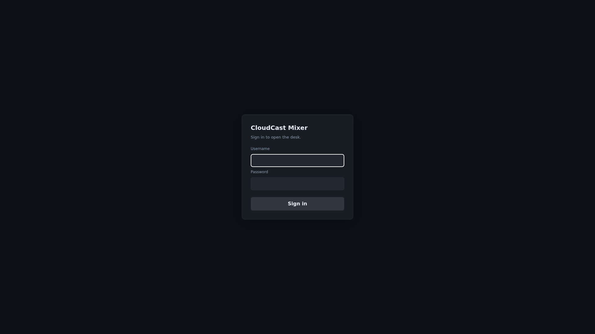
Browse to the desk's address and sign in. The lead reads Sign in to open the desk. — enter Username and Password and press Sign in.
A fresh installation has one account, admin. Its password is either the value the
deployment set (CCMIX_BOOTSTRAP_PASSWORD) or a generated one printed once in the
server's log at first start — it is stored hashed and cannot be recovered, only reset.
Five failed attempts lock the account; sessions last 12 hours.
The surface
Across the top, eight tabs: Mixer, Mix-Minus, Sources, Outputs, Intercom, Clock, Control Surface, Profiles. Everything in this manual lives under one of them. The Mixer tab is the desk itself: the channel strips in two banks of eight, with the main meter and monitor section on the right.
The header status row
The right side of the header is always visible, whatever tab you are on:
| Control | What it tells you |
|---|---|
| PHONES | Plays the cue bus in this browser (§7) |
| CUE counter and level | How many channels are cued, and the cue master level; CLEAR drops every engagement |
| Profile badge | The active profile's name; its dot lights when the desk differs from what was last saved (§12) |
| Connected | The live WebSocket to the desk. Connecting… means the surface is not currently talking to the mixer — what you see may be stale |
| Dark / Light | The desk's own theme toggle (§18) |
| Account badge | Who you are signed in as, a read-only chip if your role cannot operate the desk, and Sign out |
4. The channel strip
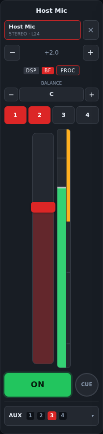
Top to bottom, every strip is the same instrument.
Patching a source
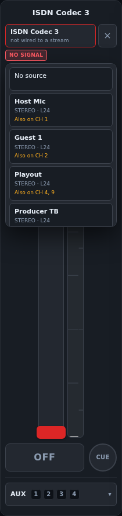
The button under the strip's name shows the patched source (or NO SOURCE). Click it to open the picker and choose from the configured sources (§10); the × beside it clears the patch. Under the source name the strip shows the wire format — e.g. STEREO · L24 — or not wired to a stream for a source with no stream yet.
Two health badges can appear here, and they mean different things:
- NO SIGNAL — the desk is not receiving the source's stream at all.
- STALLED — audio thread late — packets are arriving but the audio engine is not keeping up. On a correctly deployed mixer this indicates the host is starving the realtime thread — see the realtime privileges in §2.
Trim, pan and balance
The stepper under the source sets input trim, −20 to +20 dB — gain before everything else on the strip. Below the badges, a mono source gets Pan and a stereo source gets Balance; the centre button returns it to C.
PGM assign
The four numbered buttons 1 2 3 4 assign the channel to PGM 1–4. Lit red means assigned. A source's configuration can forbid particular buses (§10); a forbidden assignment renders disabled with the reason in its tooltip.
The fader and the meter
The fader sets the channel's level into every post-fader destination. Beside it, the channel meter draws the source's level — peak with a true-peak tick — and, when the source's processing is engaged, a narrow gain-reduction column alongside (§8). Meters update 25 times a second and read down to −50 dBFS.
ON and CUE
ON puts the channel on air — it is the switch between the fader and every destination. OFF is not a mute button on a live path so much as the channel not being open at all: backfeeds can switch what they return based on it (§9).
CUE engages pre-fade listen on the cue bus — see §7. While the desk confirms the engagement the button shows a dashed ring; solid means the engine has it.
Aux sends
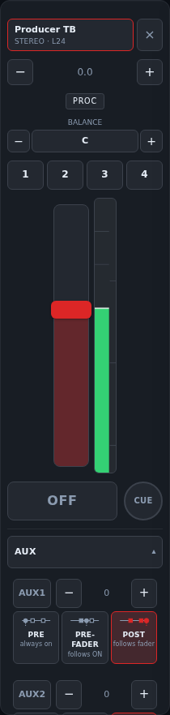
The AUX row at the strip's foot expands into one row per aux bus. Each send has an enable, a level (−60 to +10 dB), and a tap point:
| Tap | Face | Behaviour |
|---|---|---|
| Pre | PRE | always on — feeds the aux regardless of the fader and the ON switch |
| Pre-fader | PRE-FADER | follows ON — open whenever the channel is on, at send level |
| Post | POST | follows fader — the send follows the fader and ON, like programme does |
PRE is the tap for mix-minus returns — the far end keeps hearing the studio even when their own fader is closed. The Aux sends: Shown / Hidden toggle on the toolbar opens and closes the section on every strip at once.
Strip badges
| Badge | Meaning |
|---|---|
| DSP | The source's processing is engaged (not bypassed) — §8 |
| BF | This fader carries the source's backfeed return — §9 |
| BF→3 | The source's backfeed is carried by another fader (here, fader 3) |
| PROC | Opens the processing dialog |
5. Banks
The desk's 16 faders present as two banks: CH 1–8 and CH 9–16. A badge on the unselected bank counts its channels that are ON, so a live microphone can never hide behind the bank you are not looking at — the badge turns red when any of them is assigned to programme (on air), and its tooltip counts both states.
6. The main meter and the monitor
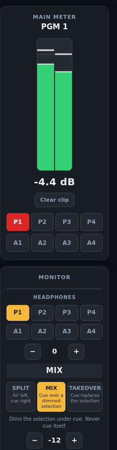
Main meter
The MAIN METER draws one bus, stereo, with a numeric peak readout beneath. The P1–P4 / A1–A4 selector chooses which bus it follows. A clip latches at the top of the scale until Clear clip is pressed — a clip that happened while you looked away still shows.
Headphones
HEADPHONES selects what you monitor — any PGM or AUX bus — with its own level stepper. This is the monitor selection the cue system plays against.
Cue modes
How cue interacts with your monitoring, selectable as three modes:
| Mode | Face | Behaviour |
|---|---|---|
| Split | SPLIT | Air left, cue right |
| Mix | MIX | Cue over a dimmed selection — the dim depth stepper appears below, and dims the selection under cue. Never cue itself. |
| Takeover | TAKEOVER | Cue replaces the selection |
Bus trims
BUS TRIMS gives every one of the eight buses a master gain stepper (−20 to +20 dB) without leaving the desk.
7. Cue and PHONES
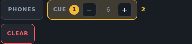
Pressing a strip's CUE puts that channel, pre-fade, on the cue bus. The header shows the count of engaged channels, the CUE master level stepper (−60 to +10 dB), and CLEAR, which drops every engagement at once.
PHONES plays the cue bus in this browser — the one place the surface carries audio. Browsers hold audio until the page has been interacted with; if you press PHONES before touching anything else the desk shows The browser is holding audio until you interact with the page. with a retry button.
Cue engagement and the cue master are runtime state, not profile state: a restart or a profile recall comes up with nothing in the headphones, deliberately.
8. Processing
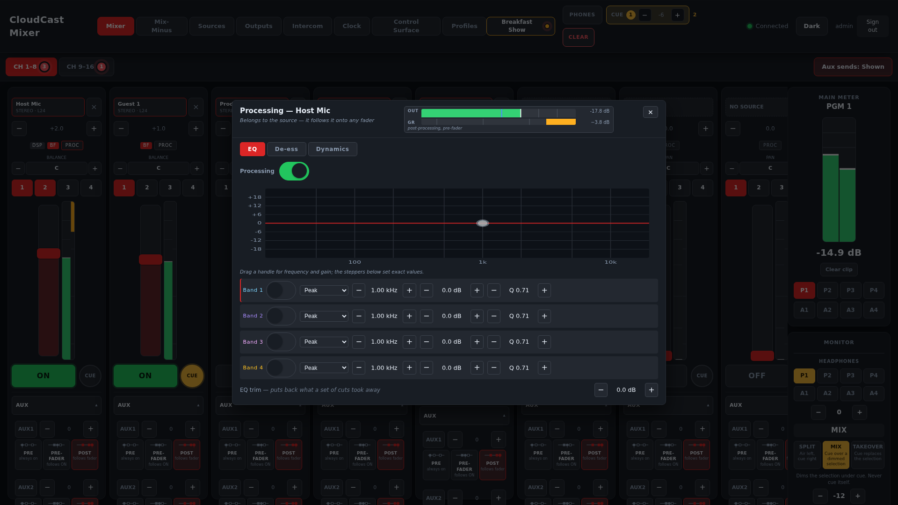
Each source carries its own processing chain, opened with the strip's PROC button. The dialog's subtitle states the model: Belongs to the source — it follows it onto any fader. Its header meters show the processed output (OUT) and gain reduction (GR) live. Three tabs: EQ, De-ess, Dynamics.
EQ
Parametric EQ with a draggable response curve. Each band selects its type — Peak, Low shelf, High shelf, High-pass, Low-pass — with frequency, gain and Q, plus an overall trim.
De-ess
A dedicated de-esser with the usual threshold and frequency-region controls.
Dynamics
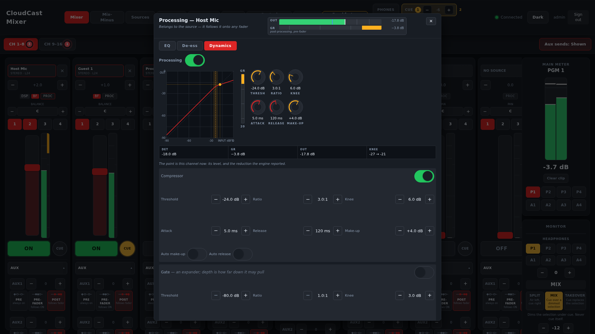
Compressor and Gate, each with an enable, threshold, ratio, knee, attack, release and make-up, with Auto make-up and Auto release options; the limiter lives at the end of the same tab. While the compressor works, the strip's meter grows its gain-reduction column and the strip shows the DSP badge.
9. Mix-minus and backfeeds
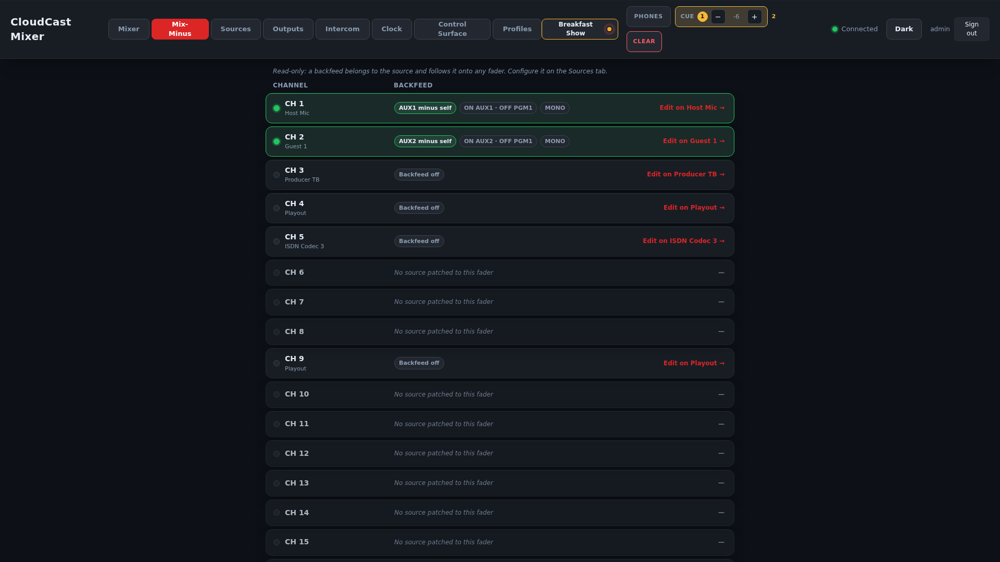
Every fader has a mix-minus feed: a return to the far end that is everything minus themselves, derived sample-exactly so a caller never hears their own voice late. The Mix-Minus tab is the desk-wide view — one row per channel showing the source patched, the bus the return is derived from now, the configured ON x · OFF y pair, MONO/STEREO, and Backfeed off or No source patched to this fader where that is the state.
The configuration itself belongs to the source — the row's Edit on … button jumps to it on the Sources tab. A backfeed configures:
- the bus the return derives from while the fader is ON (typically the aux carrying the studio's mix-minus),
- an optional different bus while the fader is OFF (typically programme, so a contributor waiting to come on hears air),
- mono or stereo, and the transmit stream that carries it back.
Because the mix-minus subtracts with the same per-sample ramps as the bus sum, the cancellation holds during fader moves, not just at rest.
10. Sources
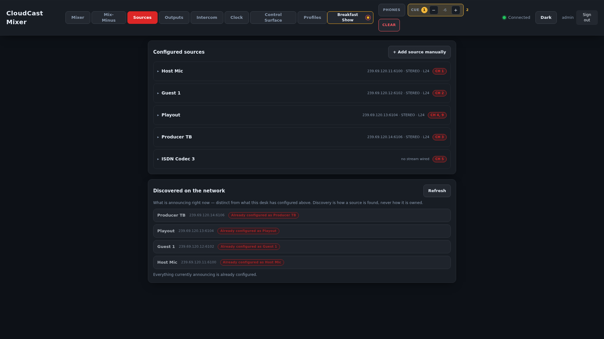
Configured sources
Configured sources is the desk's own list — everything that can be patched to a fader. Each row shows the wire (address, STEREO · L24, …) and a CH n chip naming the fader(s) it is patched to, or no stream wired for a placeholder. Expanding a row opens its four sections: Name, Permitted buses, Backfeed, Processing.
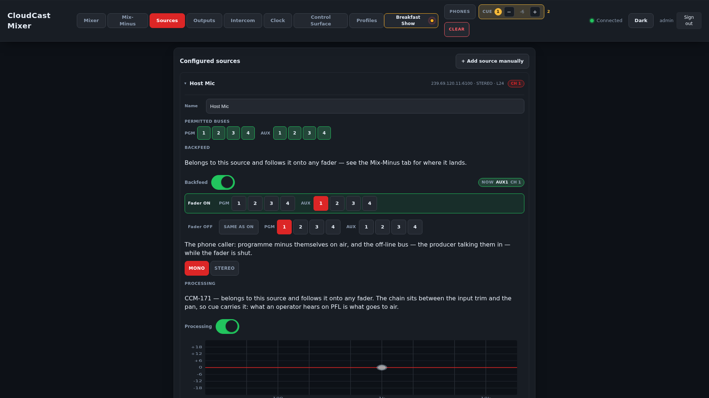
Permitted buses restricts which buses the source may be assigned to — a talkback microphone that must never reach programme is enforced here, and the strip's forbidden PGM buttons render disabled with the reason. A source that is configured but not currently announcing on the network wears a NOT ANNOUNCING badge. Delete source is refused while the source is patched to any fader.
Discovered on the network
Discovered on the network lists what is announcing right now over SAP. The panel's own hint states the model: discovery is how a source is found, never how it is owned. Promote to source turns an announcement into a configured source with one click and a name; announcements that match something already configured say so. Refresh re-asks.
Adding a source manually
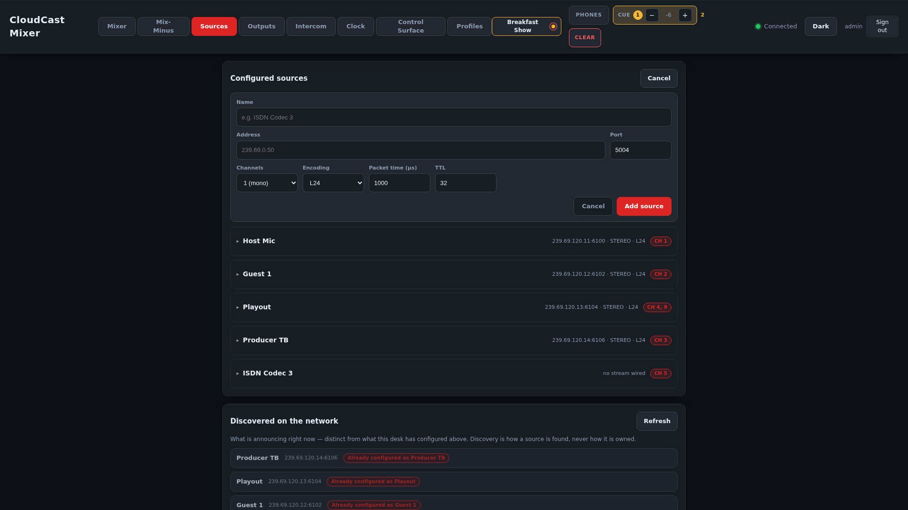
+ Add source manually is for endpoints that do not announce — an ISDN codec, a fixed encoder. Fields: Name, Address, Port, Channels (1 (mono) / 2 (stereo)), Encoding (L24/L16), Packet time (µs), TTL.
11. Outputs
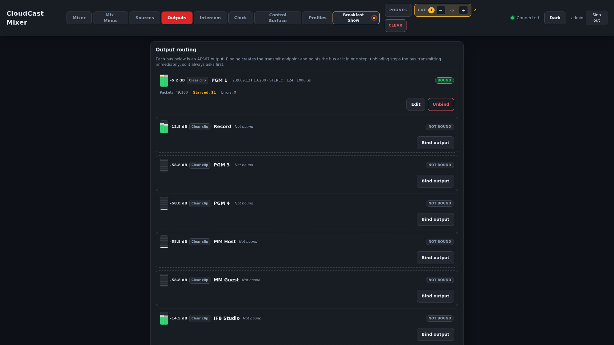
Output routing is where buses become AES67 transmit streams. The panel's hint is the contract: binding creates the transmit endpoint and points the bus at it in one step; unbinding stops the bus transmitting immediately, so it always asks first.
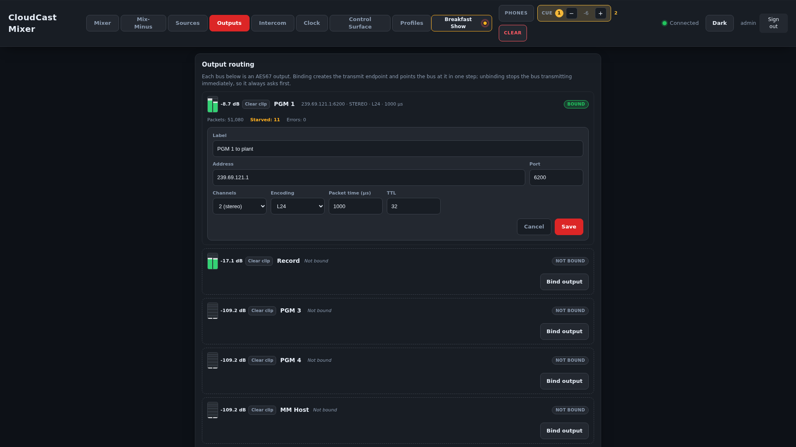
Each row carries a compact meter and transmit health — packets, starvation, errors. The bind form takes Label, Address, Port, Channels, Encoding, Packet time (µs), TTL. Unbinding warns in place — Unbinding will stop … transmitting to … — and waits for confirmation.
Monitor outputs gives the cue bus and the headphones selection their own transmit streams, for a physical monitor feed in the studio.
12. Console profiles
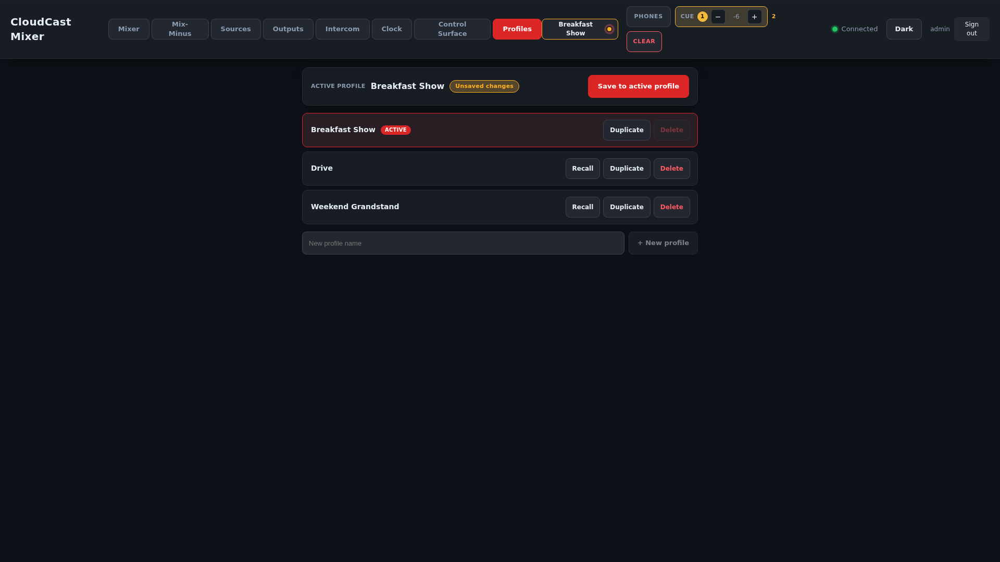
What a profile contains
A profile is the desk's setup for a show: source configuration, labels, trims, PGM assignments, aux sends and tap points, backfeeds, bus labels and trims. Operators switch profiles between programmes and expect the desk to come back exactly as they left it.
Two kinds of state are deliberately not in a profile:
- Performance — fader positions, ON states, cue engagements. These reset on load, for the same reason they reset on restart.
- Machine-local — stream addresses and bindings, interface names, clock configuration, accounts. A profile is portable between mixers; anything that would break when carried to another machine is kept out of it.
Saving
The bar names the Active profile and tracks Unsaved changes / Saved — the same state as the header badge's dot. Save to active profile writes the desk as it is now. There is no autosave: the desk you shaped during a show does not overwrite the profile behind you unless you say so.
Recalling is safe
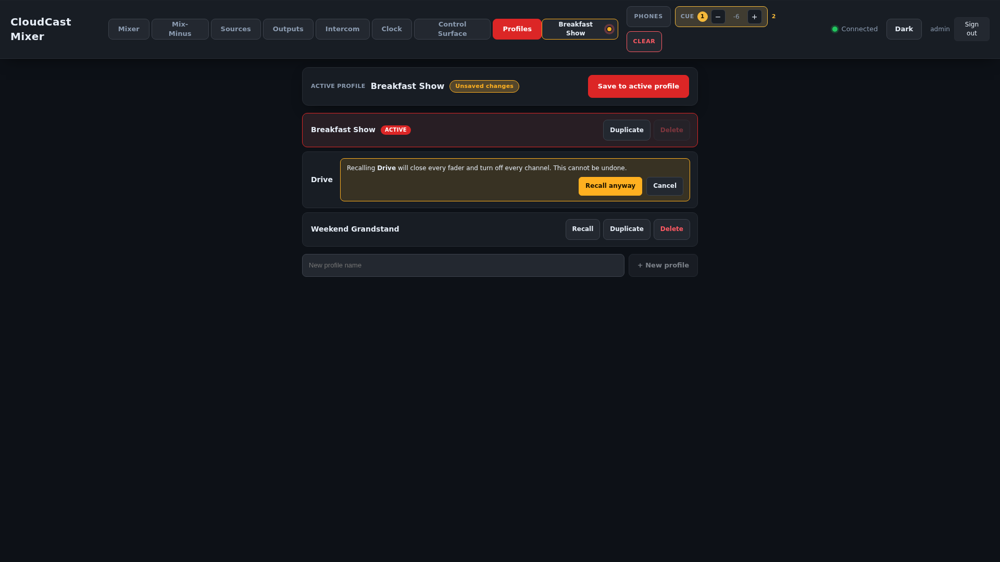
Recall activates another profile — after a confirmation (Recall anyway / Cancel) if the desk has unsaved changes. A recall never puts audio to air: the desk comes up with every fader closed and every channel off, so recalling mid-programme cannot surprise you with an open microphone.
Managing the list
+ New profile creates one at factory settings; each row offers Recall, Duplicate, Delete and inline rename. The active profile and the last remaining profile cannot be deleted, and the rows say so.
13. Clock
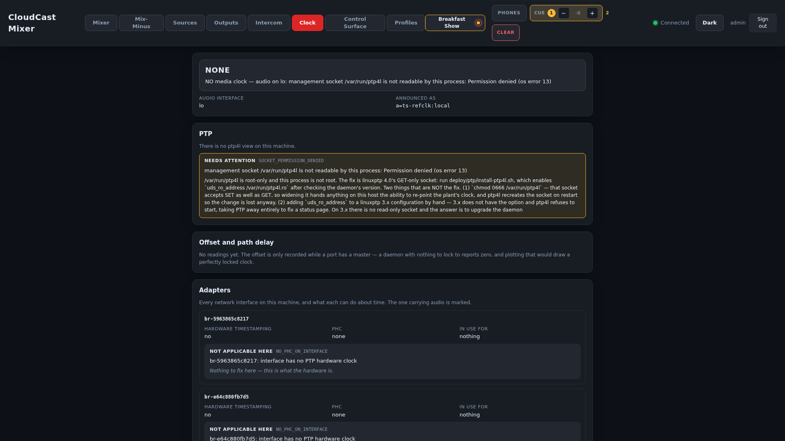
AES67 lives and dies by its media clock, and the Clock tab shows what the desk's clock is actually doing: the PTP port state, interface, timestamping and delay mechanism, the grandmaster's identity and qualifications (priorities, clock class, accuracy, variance, time source), offset from master and mean path delay. When the desk cannot make a conformant claim — no PTP hardware clock, a free-running grandmaster — this panel says so rather than implying lock. A trend table records recent clock behaviour.
14. Intercom
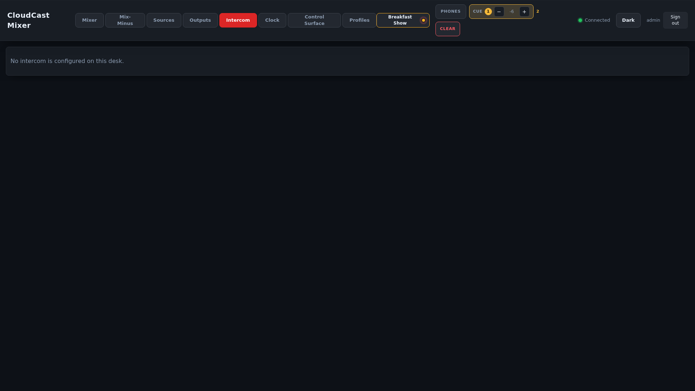
When the deployment wires the desk to a RemoteTalk intercom, the Intercom tab is a key panel: a grid of channels with TALK and LISTEN keys, tallies for who is talking, page tabs for larger panels, and a REC chip on channels being recorded. The header's intercom indicator lights for an incoming private call from anywhere in the surface, and clicking it jumps here. Without an intercom configured the tab reports that plainly.
15. Control surfaces
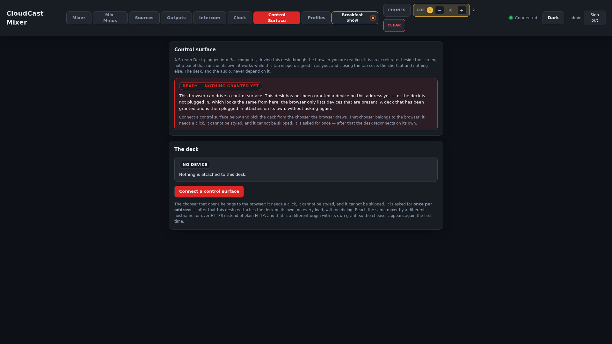
The Control Surface tab pairs a physical Stream Deck with the desk over WebHID. The capability block reports what this browser can do — from Not in this browser and Not from this address through Ready — nothing granted yet to Granted — and Connect a control surface asks the browser to grant a device; Forget this device revokes it. The panel states the mapping in sentences: keys cue channels exactly as the CUE buttons on the mixer do, and the rotaries follow the desk's selection.
Grants are per-browser and per-address, and WebHID requires a secure context — the capability block names whichever of these is the obstacle.
16. The rack panel
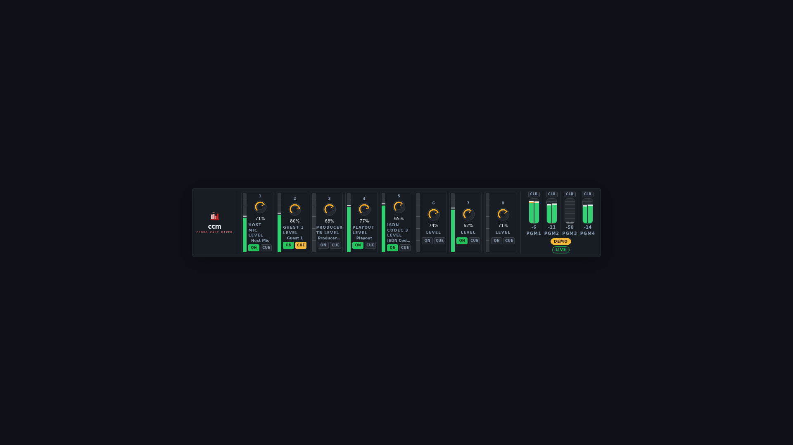
/panel is a chrome-free strip built for a rack display or an under-monitor screen:
per-channel level, ON and CUE state, and the four programme meters, with a LIVE /
DOWN connection pill. URL parameters shape it — theme, width, channels,
meters, controls — so one bookmark is one panel.
The DEMO toggle draws invented levels for demonstrations; its own tooltip is the contract: Show invented levels for a demonstration. Nothing on the desk changes. The screenshot above is the panel in demo mode.
17. Accounts, roles and security
Every surface — browser, REST, WebSocket — authenticates. There is no anonymous desk unless the deployment explicitly enables a read-only or operator panel fallback, and that fallback is logged loudly at every start.
- Roles: an account may read, operate (write), or administer. A signed-in account that cannot operate sees the desk with a read-only chip and disabled controls.
- Admin's password is set at bootstrap or generated and printed once; change it with
the API's password endpoint. Accounts are managed over the REST API
(
/api/auth/users); there is no user-management panel on the surface. - Five failed sign-ins lock an account. Sessions expire after 12 hours.
- Every administrative and operational mutation lands in the audit log (
/api/audit).
18. Themes
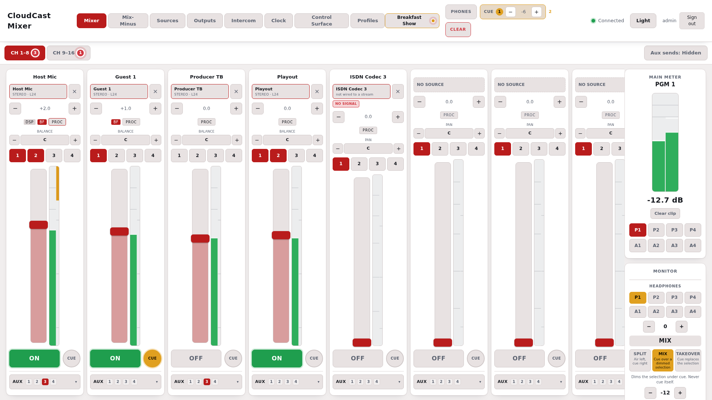
The Dark / Light toggle in the header switches the desk's own theme. The desk owns this deliberately — it does not follow the operating system — so a rack display pinned to dark stays dark whatever the host machine decides.
Manual generated against CloudCast Mixer as of 2026-08-25 (main @ ea6da2c, CCM-1…291).
Screenshots were captured with build/manual-screenshots.mjs against a real
ccmix-server on the AES67 transport, fed by the repository's ccmix-testsrc
identification tone on loopback multicast — every meter shows genuine signal, and the
levels shown are that test signal, not programme. The one exception is §16's rack panel,
photographed in the product's own DEMO mode, which the panel itself labels. The Clock
panel shows the no-PTP state of the capture host; the Intercom panel is shown without a
RemoteTalk connection.